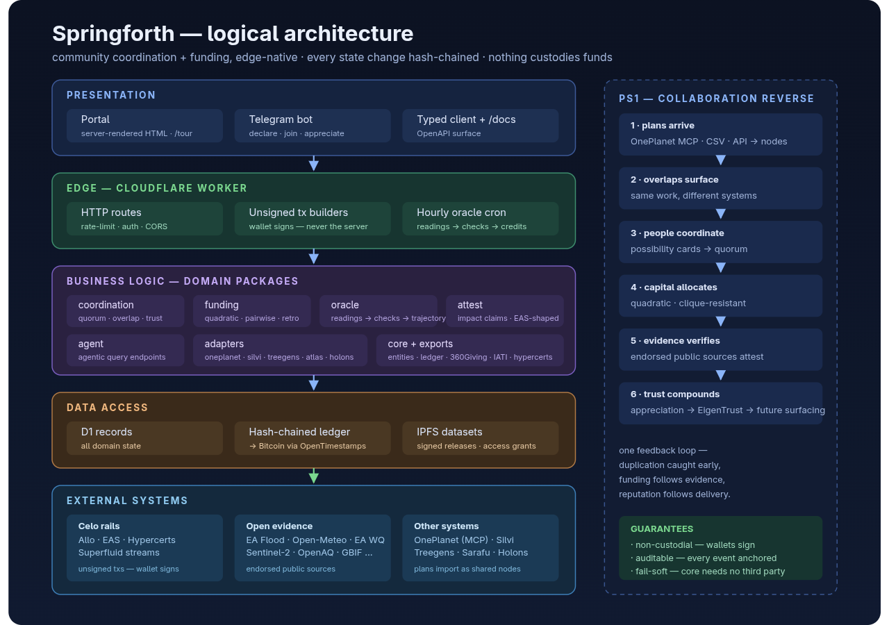
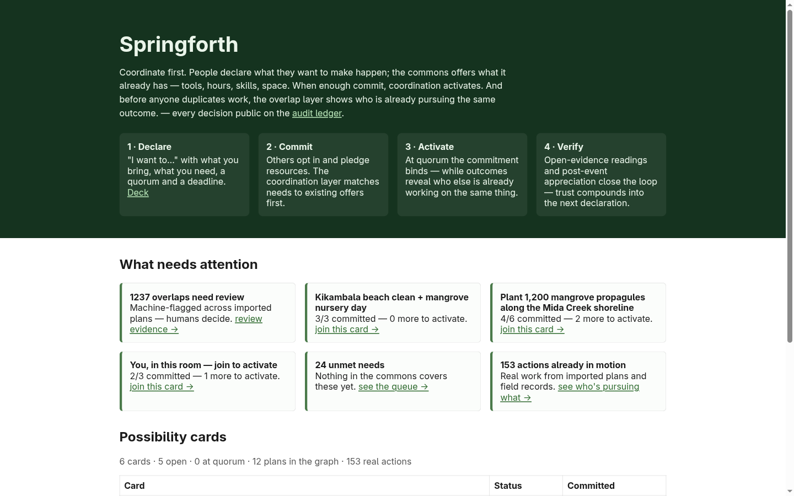
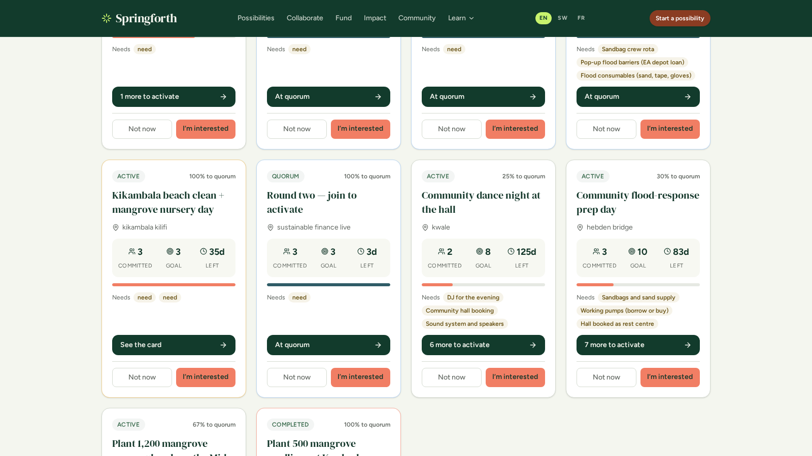
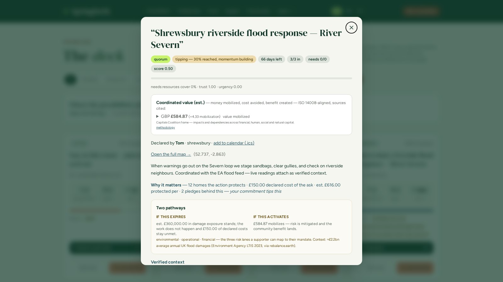
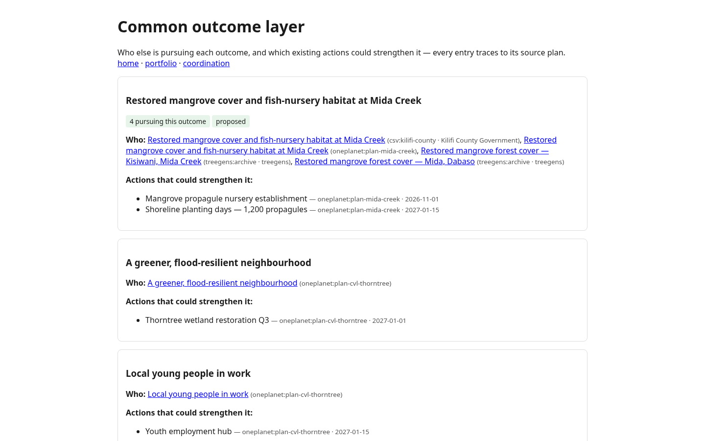
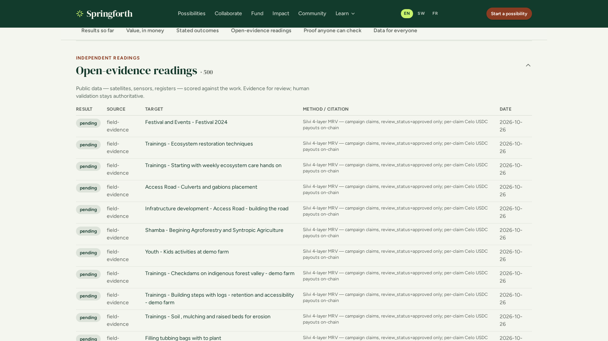
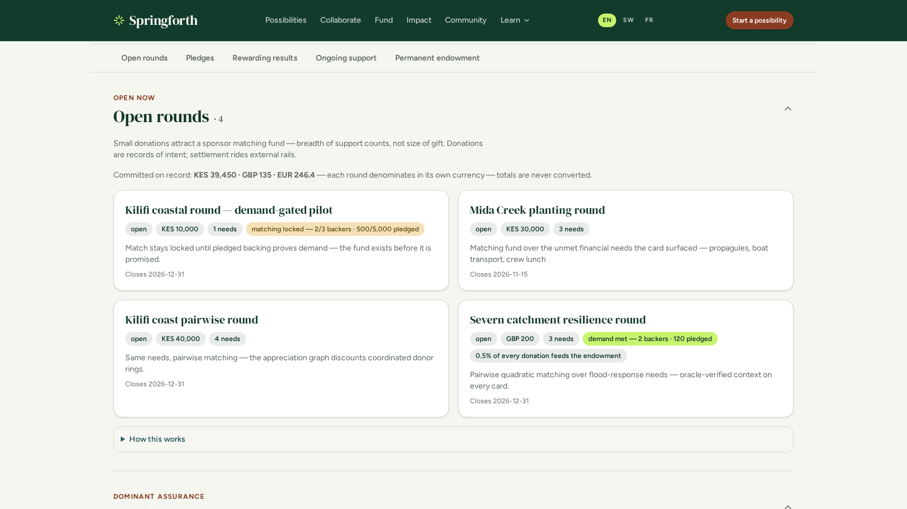
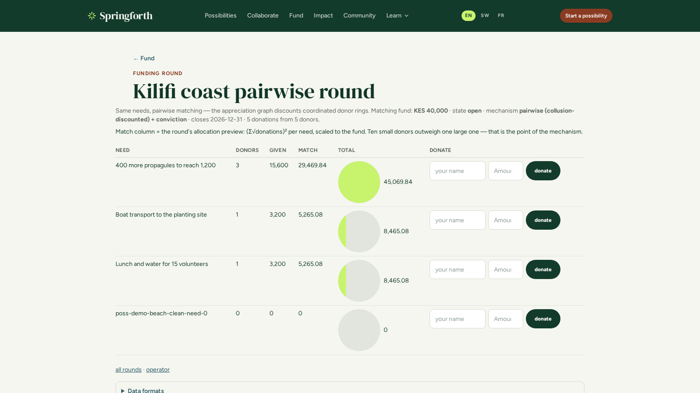
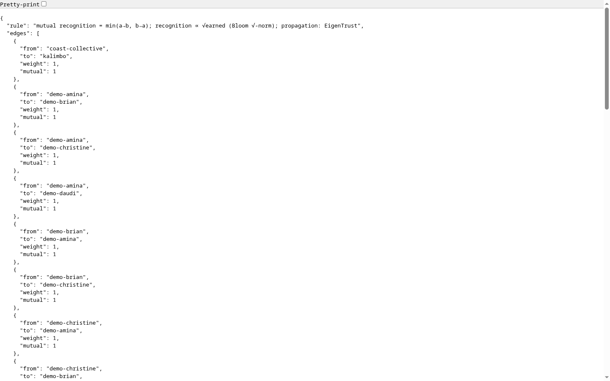

Sustainable FinanceLive 2026 · Team Two · PS1
Springforth
Coordinate first. Community plans, “I want to…” declarations and funding pledges become coordinated commitments — activated at quorum, evidenced on a hash-chained ledger.
0:00–0:45 — Open on the team-as-proof line: “the problem we solve is the one this hackathon just performed.” One honesty line: platform predates the event; what’s new here is the evidence layer + funding path.
The coordination gap
Plans live in different systems.
Overlap stays invisible until it’s too late.
- Surface→ declare a possibility
- Match→ quorum + overlap detection
- Fund→ demand-gated pledges
- Deliver→ reports + appreciation
- Measure→ oracle checks + ledger
- Steward→ council seats at quorum
Your own model
The bootcamp’s marketplace for community liquidity — Surface, Match, Fund, Deliver, Measure, Steward — is literally this lifecycle. Springforth is that layer, running.
0:45–1:45 — Name the organisers’ slide back to them. Show architecture image ~10s only, point at the right rail.
Logical architecture

Coordination kernel → evidence lane → funding lane → stewardship. Ten seconds.
1:45 boundary — don’t dwell; the diagram backs the demo, not the other way round.
Live on production — not a mockup
The demo, in six legs
- Feedreason lines + signals — /possibilities
- Cardquorum, council, value — click a card
- Overlap4 pursuing one outcome — /collaborate
- Evidenceendorsed sources — /impact
- Fundingdemand-gated rounds — /fund
- Auditmap + ledger-verify
Audience quorum card — scan, join, watch it activate.
springforth.widespread.workers.dev
1:45–4:45 — Run DEMO-SCRIPT.md legs. If live fails → appendix slides 11+ walk the same beats.
Treasurer-grade value
Four capitals, kept distinct — every figure replayable from the ledger.
- Financialcommitted + matched
- Humanvolunteer hours at ONS rates
- Socialin-kind, never converted
- Naturalrisk-avoided, e.g. £360k flood
4:45–6:00 — BRP answer: co-benefit quantification + avoided-cost harvesting. £1→£10 claim becomes an auditable number. Name OnePlanet MCP import + Sarafu fit.
Use of datasets
Endorsed sources, read hourly — honestly tiered.
EA Flood, Open-Meteo, FHRS, IoD 2025, Sentinel-2 STAC live and keyless; Companies House, OS, EO Data Hub marked key-gated. OnePlanet MCP + Sarafu imports carry provenance.
Criterion: use of datasets. Point at the honest key-gated labelling — that’s the credibility beat.
Business model + feasibility
Revenue where value already moves
Settlement fee
Funder-side fee on matched rounds — no new behaviour required.
Hosted deployments
Councils and partnerships run their own coordination instance.
Dataset revenue
Consented, ledger-anchored audit corpus — sold only when worth selling.
Non-custodial by construction — the only money we touch is the fee. Pilot path: BRP in the UK, a Sarafu community in Kenya; the seed data already spans both.
6:00–7:00 — Keep this brisk; the demo already argued feasibility.
Feasibility — it runs now
- 7,123hash-chained ledger events, /ledger/verify green
- 3,689plan nodes — OnePlanet, Sarafu, Treegens, council CSVs
- 2countries live — UK flood response + Kenya mangroves
- 186real field-evidence pins on /map
Numbers are live-loaded, not slide-fiction — judges can check /ledger/verify themselves.
Why this wins
The coordination problem that
formed this team is the one we sell the fix for.
Demo, business idea, technical implementation, datasets, feasibility, scalability, impact — answered live, on a ledger any reviewer can replay.
7:00–7:30 — Close on the criteria callback. Buffer to 8:00 for one breath.
Q&A
Everything is inspectable.
- Demospringforth.widespread.workers.dev — /how-it-works self-serve
- Codegithub.com/TerexitariusStomp/springforth — MIT-clean
- Ledger/ledger/verify — hash chain, live
- Value/impact — per-currency, never converted
Pocket answers in PITCH-LIVE.md §Judge-Q&A: crowdfunding-difference, OnePlanet-difference, provenance, team.
Appendix · demo fallback
If the demo fails — same beats, on screenshots

1 · Landing — live stats in the hero.
Appendix

2 · Possibilities feed — reason lines, interest signals, since-engagement badges.
Appendix

3 · Quorum card — council, forum, audit trail, value block with verifier-replay.
Appendix

4 · /collaborate#outcomes — four plans pursuing one outcome, Treegens footage.
Appendix

5 · /impact#evidence — oracle checks + methodology citations.
Appendix

6 · /fund#rounds — demand met vs matching locked, endowment.
Appendix

7 · Pairwise + quadratic allocation — clique discount visible.
Appendix

8 · /community — trust counts only where it runs both ways; every edge ledger-attested.